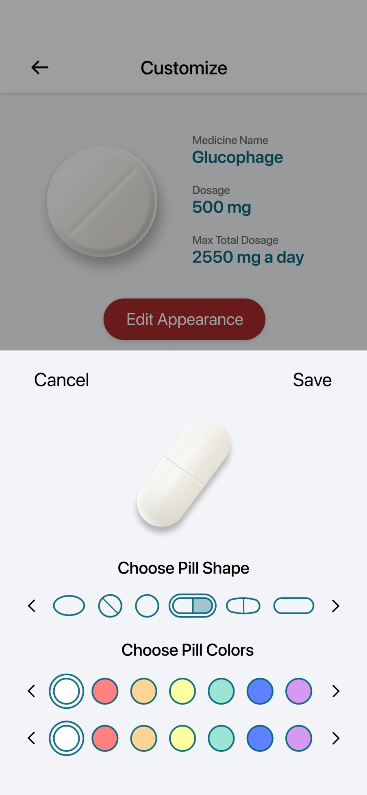

Project Overview
Many people who have to take medicine end up forgetting to take it because they do not have a system set up to remind them. This could lead to serious consequences. MedTime is an app that reminds people to take their medication on time. This app will be helpful to those who suffer from forgetting to take their medicine.
Understanding Users
To work towards understanding the users I am designing for, I did research by formulating personas and conducted competitive audits as part of my ideation process. I decided that there would be two main user groups: those who would access the app on their mobile devices and those who would use website versions.
Crafting Personas
Paper to Digital
I sketched multiple iterations of paper wireframes for multiple screens to get started with the design. I put stars next to any features I might consider keeping in the next iteration of the designs.

After creating these wireframes, I digitized them with Figma and turned wireframes into working mid-fidelity prototypes.
User Testing
After building the mid-fidelity prototype, I used it to conduct a usability study, and from it, I gained many new findings about how to improve my designs:
The two add buttons on the home screen caused confusing navigation for most users
The lack of a mark all as done button creates inconvenience for users
Although the primary add button is large, it is not the most visible because it lacks contrast
Making Changes
After conducting both usability studies, I made some changes to my high-fidelity prototype!
1. Navigation and User Flow
I decided to remove the two plus buttons and make the primary plus button have more color contrast with its surroundings. Additionally, I also included a new “All done” button that allows users to record their completion easily.

→

2. Customization Options
Users wanted a functioning change appearance feature for the pills. Most users from my usability study believed that having this function was a crucial part of an effective medicine reminder app.

→

The Design System
Final Product
And a website too!
Now that I have created a dedicated mobile app for MedTime. It would be good to have a web version of it as well. The web version is a responsive web design that adapts to different screen sizes, making on-the-go reminders even easier to achieve.
Accessibility
1. High Contrast Colors
In my design, I included high contrast colors and bolded fonts for emphasis and ease of viewing. This allows for people with vision impairments to still read the text with less effort.
2. Navigation
I placed all the necessary functions of the primary user flow on the main page of the app, which means all the necessary features are able to be found in one place, allowing users to complete most tasks without navigation issues.
Takeaways
What I Learned:
I learned that designing for laptop and tablet are quite similar experiences because of their similar proportions. However, I thought that mobile apps and mobile sites would basically be the same, but there were many different considerations I had to make to transform the app into a mobile website design.